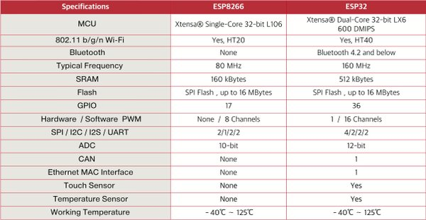

Teste de Perda de Pacotes com a ESP32
O uso de microcontroladores, como o ESP32, tem se tornado cada vez mais comum em aplicações de IoT, robótica, drones, entre outras. Esses dispositivos são programados para se comunicar com um computador, seja para enviar dados ou receber comandos. A comunicação entre eles frequentemente é feita via Wi-Fi, utilizando a internet como meio de transmissão.
Neste projeto, testamos a perda de pacotes entre um ESP32 e um computador utilizando os protocolos UDP e TCP. Nosso objetivo é analisar se a perda de pacotes é significativa e, em caso afirmativo, propor soluções para minimizar os impactos dessa perda na comunicação.
 Microcontrolador ESP32 utilizado no experimento
Microcontrolador ESP32 utilizado no experimento
Aqui esta uma tabela compartiva entre a antiga versão do ESP8266 e a nova versão do ESP32.

Comparativo entre as versões do ESP32
Descrição do Teste
O teste consiste em criar um servidor no ESP32 e um cliente no computador. Uma possível aplicação prática seria o ESP32 como interface para um braço robótico e o computador como controlador desse braço, uma configuração comum em telecirurgia, por exemplo. O computador envia comandos ao ESP32, que, por sua vez, retorna dados de sensores.
O ESP32 foi programado em C++ utilizando a biblioteca Arduino, com a ferramenta PlatformIO. Já o cliente no computador foi programado em Python. O ESP32 foi conectado à rede via Wi-Fi, enquanto o computador utilizou uma conexão via cabo Ethernet.
 Logo do Arduino e do PlatformIO
Logo do Arduino e do PlatformIO
Teste com UDP
Teste com payload de 1450 bytes
No teste com payload de 1450 bytes, realizamos a transmissão de pacotes UDP entre o ESP32 e o computador, com o objetivo de avaliar o impacto da perda de pacotes na comunicação. Durante o experimento, foram enviados 10.000 pacotes de 1450 bytes do computador para o ESP32. No entanto, apenas 247 pacotes chegaram ao destino, resultando em uma perda impressionante de 97,5%. Esse alto índice de perda compromete significativamente a confiabilidade da comunicação, o que pode ser crítico em sistemas que dependem de dados em tempo real.
Os programas utilizados no experimento foram o clientUDP.py, que executa no computador, e o serverUDP.cpp, que roda no ESP32. A alta taxa de perda de pacotes observada sugere que esse tipo de configuração pode não ser adequado para aplicações sensíveis a atrasos ou falhas na entrega de dados.
 Gráfico do delay de processamento dos pacotes UDP
Gráfico do delay de processamento dos pacotes UDP
O gráfico acima ilustra o delay de processamento de cada pacote em relação ao tempo, medido em milissegundos, desde o início da execução no ESP32. A análise revela que o delay médio foi de 0,694 ms, com picos de até aproximadamente 90 ms, que ocorrem periodicamente a cada cerca de 720 ms. Esses picos indicam variações significativas no tempo de processamento, o que pode refletir condições de sobrecarga ou flutuações no ambiente de execução. Os logs detalhados desse teste estão disponíveis no arquivo "esp32-log-udp-payload-1450.txt", para análise mais aprofundada.
Por que tantos pacotes foram perdidos?
Um dos fatores que contribuiu para a perda de pacotes foi o MSS (Maximum Segment Size) da rede, que, neste caso, foi identificado posteriormente como 1436 bytes por meio da análise da comunicação TCP com o Wireshark. Ao ajustar o tamanho do payload para 1000 bytes, observou-se uma redução na taxa de perda de pacotes, que caiu para 94,18%, embora ainda seja um valor consideravelmente alto. Mesmo com o ajuste para um payload de 256 bytes, a taxa de perda permaneceu praticamente a mesma, em torno de 93,14%, indicando que o problema da perda de pacotes está mais relacionado a limitações da rede ou do protocolo do que ao tamanho do payload em si.
Abaixo temos uma imagem do pacote que foi capturado pelo Wireshark, onde podemos ver o MSS da rede.
MSS da rede
Uma possível solução para mitigar a perda de pacotes seria implementar um mecanismo de ACK (Acknowledgment) no protocolo UDP, garantindo assim a entrega dos pacotes. No entanto, conforme discutido em sala de aula, adicionar esse mecanismo ao UDP seria redundante, já que o protocolo TCP já oferece essa funcionalidade de forma nativa. Assim, a abordagem mais eficiente seria utilizar o protocolo TCP, que já possui garantias de entrega e controle de retransmissão, tornando a comunicação mais confiável e adequada para cenários onde a integridade dos dados é crucial.
Teste com TCP
Teste com payload de 1450 bytes
Com o TCP, como esperado não houve perda de pacotes. Foram enviados 100 pacotes de 1450 bytes do computador para o ESP32 e todos chegaram corretamente. O RTT (Round-Trip Time) médio foi de 2.35 segundos. O Tempo total foi 236 segundos. O arquivo de log desse teste está disponível em "esp32-log-tcp-payload-1450.txt".
A imagem abaixo mostra a relação pacotes por segundo em relação ao tempo.
 Gráfico de pacotes por segundo
Gráfico de pacotes por segundo
O gráfico ilustra a relação entre o número de pacotes por segundo enviados ao longo do tempo, e revela padrões interessantes sobre a comunicação TCP no experimento. Observa-se uma variação significativa na taxa de pacotes, com momentos de maior intensidade seguidos por períodos em que a quantidade de pacotes enviados cai drasticamente, chegando a zero em alguns pontos. Essa oscilação pode ser atribuída a fatores como atrasos na retransmissão de pacotes ou no envio de confirmações (ACKs) pelo protocolo TCP, que busca garantir a entrega confiável dos dados.
 Gráfico do delay de processamento dos pacotes UDP
Gráfico do delay de processamento dos pacotes UDP
O gráfico acima destaca, em vermelho, os pacotes retransmitidos durante a comunicação. Observa-se que os períodos em que a taxa de pacotes por segundo diminui coincidem com os momentos de maior número de retransmissões. Esse comportamento reflete o mecanismo de controle de congestionamento do protocolo TCP, que reduz temporariamente o envio de novos pacotes para priorizar a retransmissão dos que foram perdidos ou corrompidos, garantindo a integridade dos dados transmitidos.
Teste com payload de 1000 bytes
Com um payload de 1000 bytes, o tempo médio de round-trip (RTT) foi de 1,13 segundos, resultando em um tempo total de 113 segundos para a transmissão completa. Esse valor de RTT reflete a latência da comunicação, levando em consideração o tempo de ida e volta dos pacotes entre o ESP32 e o computador. Os detalhes completos do teste podem ser consultados no arquivo de log disponível em "esp32-log-tcp-payload-1000.txt".
Gráfico de pacotes por segundo
O gráfico revela que, ao utilizar um payload de 1000 bytes, houve uma redução significativa no número de pacotes retransmitidos. Além disso, a taxa de pacotes por segundo apresentou maior estabilidade, indicando uma comunicação mais eficiente e consistente. Esse resultado sugere que a escolha de um payload menor pode contribuir para minimizar retransmissões e melhorar o desempenho geral da transmissão, especialmente em cenários onde a confiabilidade e a regularidade são fundamentais.
Conclusão
O teste de perda de pacotes entre o ESP32 e o computador, utilizando os protocolos UDP e TCP, revelou informações cruciais sobre a confiabilidade e eficiência de comunicação nesses dispositivos. No caso do protocolo UDP, observamos uma taxa de perda de pacotes alarmante, que chegou a 97,5% com um payload de 1450 bytes, o que compromete severamente a integridade dos dados transmitidos. A análise do delay de processamento também mostrou variações significativas, indicando sobrecargas ou flutuações que podem agravar ainda mais a confiabilidade da comunicação.
A investigação das causas da perda de pacotes, como o MSS da rede e o tamanho do payload, sugeriu que o problema estava relacionado mais às limitações da rede do que ao tamanho dos pacotes. Apesar de ajustes no payload, as taxas de perda continuaram elevadas, destacando as limitações do protocolo UDP para aplicações que exigem alta confiabilidade.
Por outro lado, o protocolo TCP, ao ser testado, demonstrou superioridade em termos de confiabilidade. Não houve perda de pacotes, e a latência foi aceitável, com um RTT médio de 1,13 segundos para payloads de 1000 bytes. A estabilidade na taxa de pacotes por segundo e a redução nas retransmissões de pacotes indicaram que o TCP é mais adequado para cenários em que a integridade dos dados é crítica, já que o protocolo oferece garantias de entrega e mecanismos de controle de retransmissão que o UDP não possui.
Portanto, a principal conclusão do estudo é que, embora o protocolo UDP possa ser adequado para situações onde a perda de pacotes não comprometa o desempenho, o TCP se revela mais confiável e eficiente para aplicações em que a entrega de dados precisa ser garantida e a comunicação precisa ser estável, como em sistemas sensíveis a falhas de comunicação, como robótica e IoT.